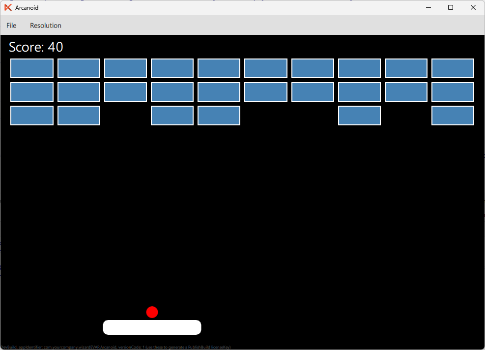

In this part of the tutorial, we will extend our Arcanoid game by adding a score counter that increments every time a brick is destroyed.
Now we will extend the game by adding score counter.
First, we add a score property to the gameArea:
property int score: 0
Now we will add a text element to display the score in the top-left corner of the game area. Add the following code inside the gameArea:
Text {
text: "Score: " + gameArea.score
color: "white"
font.pixelSize: 14
anchors.right: parent.right
anchors.top: parent.top
anchors.margins: 2
}
To ensure the score display fits well, we need to shift our bricks a bit down. Find the code where we create the bricks and increment the y position by, say, 20 points:
x: bricks.brickSpacing + col * (bricks.brickWidth + bricks.brickSpacing) y: bricks.brickSpacing + row * (bricks.brickHeight + bricks.brickSpacing) + 20
Lets add 10 points for every discarded brick by default. Add just one line after item.destroyed = true:
item.destroyed = true ball.ballSpeedY *= -1 // increment score gameArea.score += 10 break
